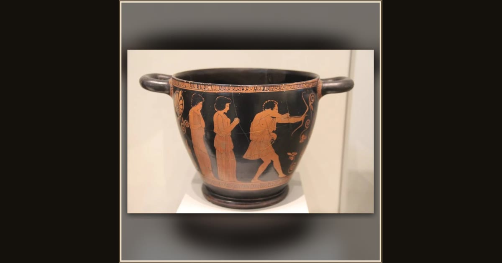

Skyphos: Odysseus slaying the suitors
Penelope Painter, Attic Greek · c. 440 BC · Antikensammlung, Berlin · Berlin, Germany
Back home at last, Odysseus draws his great bow and fights off the greedy suitors who tried to take his palace and his wife. Explore its place in Book XXII of the Odyssey.